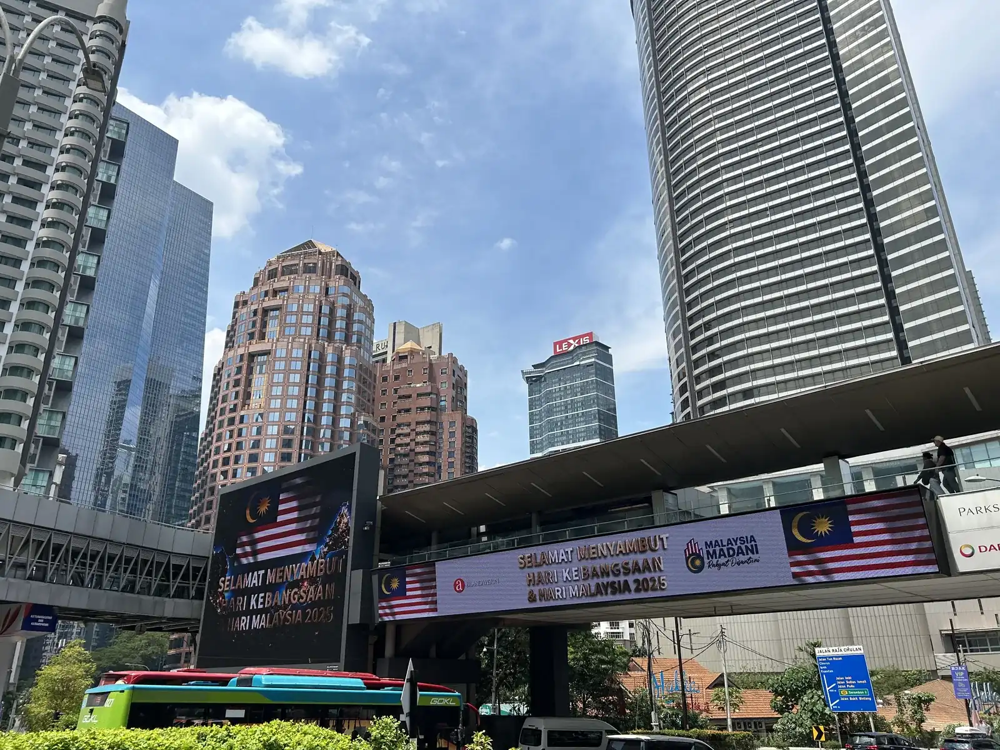
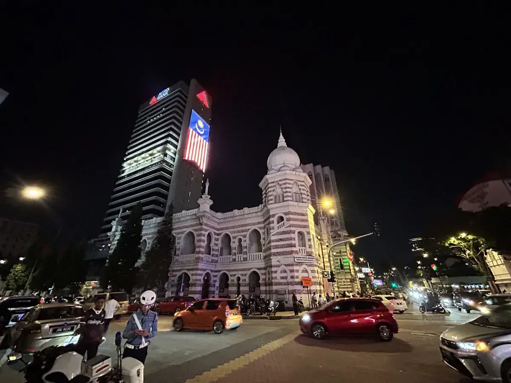

新山：一张火车票买不到的，正在被资本买到
Johor Bahru — a city you can't yet buy a train ticket to, but capital is already buying.
海鑫汇 董立鑫
于新加坡出发，赴马来西亚新山

2025年，我们从新加坡出发去新山做产业考察，了解柔佛州的政策。这一路走下来，最深的感受是：这座城市的"基建焦虑"和"资本热度"是同时在发生的。
柔新经济特区：一份写了2034年的协议
2025年1月7日，马来西亚和新加坡正式签署了柔佛-新加坡经济特区（JS-SEZ）协议，覆盖依斯干达开发区、边佳兰在内的九大旗舰区，总面积3505平方公里，政策有效期一直设到2034年12月31日。这份协议的核心逻辑很清楚：新加坡出技术、资本和全球网络，柔佛出土地、劳动力和成本优势，形成"新加坡研发、柔佛生产"的分工模式。
具体的激励力度也不小——制造业、物流、数字经济、绿色能源等11个重点领域，企业所得税可以低至5%，最长享受15年；数据中心、云计算、数字基础设施开发商，更是能拿到100%的税收抵免。目标是首个五年落地50个项目，十年内累计100个项目，创造2万个技术类就业岗位。

AIDC：柔佛正在变成东南亚的"电力密集区"
这次考察最直观的感受是——柔佛现在有相当多AIDC（人工智能数据中心）项目在建或已经落地。逻辑不难理解：新加坡本身土地稀缺、电力和土地成本都在上升，而柔佛正好接壤，地价便宜、扩容空间大，顺理成章地承接了新加坡溢出的算力需求。
但这条路也不是没有代价。柔佛部分区域本身电力供应存在波动甚至断电的风险，AI高性能计算集群对电力稳定性的要求又极其苛刻，不少项目需要额外投资备用电源系统；再加上热带气候高温高湿，数据中心的冷却成本也比温带地区高出一截，很多项目不得不上液冷或其他高效散热方案。这是一种很典型的"后发地区承接产业转移"的剧本：先靠成本优势把项目吸引过来，然后再一点点把基础设施的短板补齐，很多中国企业过去在国内做产业转移承接的时候，走的也是同一条路。
也正是因为这一整套政策和产业信号，现在有相当多中国企业和中国人正在往新山跑——有人来看厂房，有人来看数据中心项目，也有人纯粹是来看这个"新加坡后花园"到底值不值得下注。
一张还没到点的车票
从新山去吉隆坡，我们本来是奔着那条"3.5小时特快"去的——马来亚铁道公司（KTMB）新修的双轨电动火车（ETS），把新山到吉隆坡的车程从原来的5到7小时，直接压缩到3.5到4.5小时，是柔佛-新加坡这条经济走廊上最受关注的基建项目之一。结果我们去买票的时候被告知：还没开通。
这不是我们记错了，是真事——这条线原计划2025年12月12日正式开跑，后来因为工程原因，又推迟到了2026年1月1日才通车。我们去的时间，正好卡在这个"已经官宣、但还没真正跑起来"的空档期。
这个小插曲其实挺说明问题的：柔佛现在的产业叙事，比它的基础设施交付速度要快一截。政策已经签了、资本已经在往里冲了、企业已经在选址了，但一条铁路，还是得按照工程自己的节奏，一延再延才能真正跑起来。这也是任何一个正在快速升级的新兴经济区，几乎必然会经历的阶段——故事讲得快，钢筋水泥跟得慢。
大巴反而成了意外的惊喜
买不成火车票，我们改坐大巴。可能是选错了车型——买到的是那种价格偏贵的大巴，结果一上车才发现，车上人很少，座椅是那种"太空舱"式的全躺平设计，舒适度出乎意料地好。四个多小时，从新山到吉隆坡，路上反而挺惬意。
这个小插曲对我来说也是个提醒：在一个基础设施还在快速迭代的市场里，"最先进"的选项未必是当下最好用的选项。我们冲着"最快"去的，结果那条路还没通；反倒是被我们当"备选"的大巴，用一种意想不到的方式把体验做到位了。柔佛这个市场现在到处都是这种错位——顶层的政策和资本叙事跑得飞快，具体到某一条铁路、某一次出行体验，节奏完全是另一回事。这恰恰是考察一个新兴市场最真实的样子：不是看它官宣了什么，是看你自己踩上去，哪里通、哪里不通。
这一站留下的判断
柔新经济特区这份写到2034年的协议、遍地开花的AIDC项目、还有那张我们没买成的火车票——三件事放在一起看，才是新山这座城市现在最真实的状态：它的资本速度和它的基建速度，还没有完全对齐，但它已经把话放出去了，全世界都在盯着它兑现。这跟我们过去在中欧、东南亚看到的很多"承接产业转移"的样本一样——故事讲得漂亮，最后能不能兑现，决定这个地方是下一个深圳，还是下一个烂尾的示范区。
一个地方值不值得下注，不能只看它签了什么协议，要看它敢不敢把交付日期，摆到台面上让所有人盯着看。
——董立鑫 海鑫汇创始人兼执行总裁，新加坡世贸秘书长兼首席运营官
本文内容整理自海鑫汇海外考察记录，首发于海鑫汇。